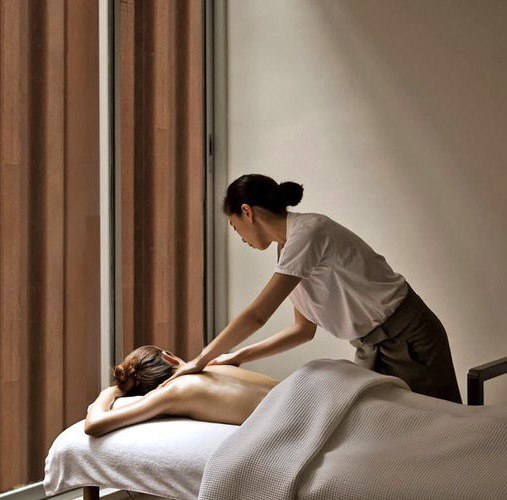
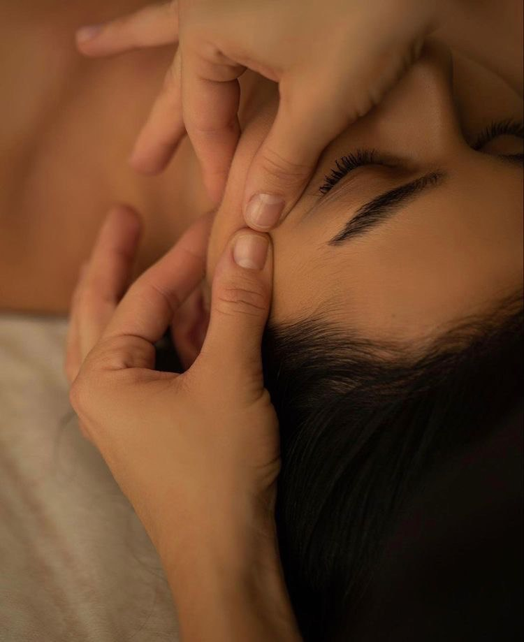
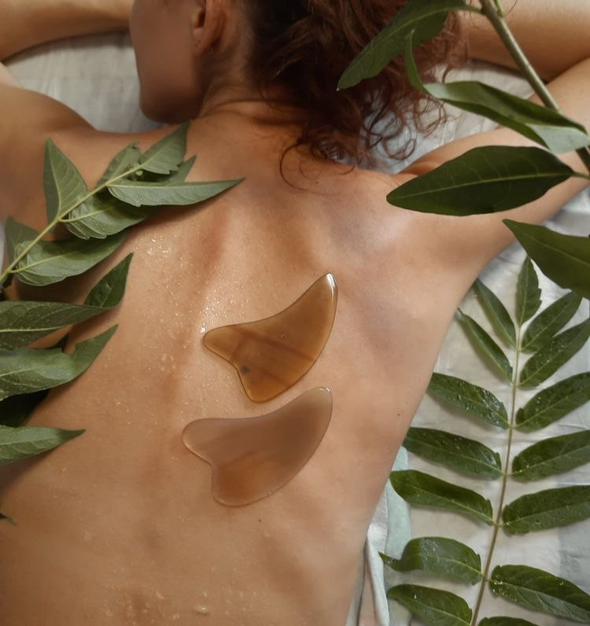
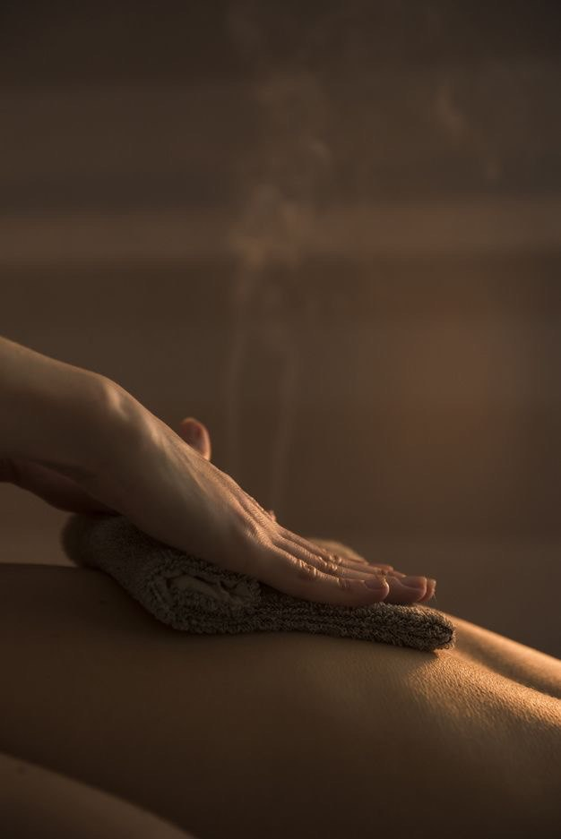

Classic massage for general relaxation and stress relief. Thanks to classical massage, the immune system is strengthened, skin firmness and elasticity are increased, blood circulation is improved, and the work of the sebaceous and sweat glands is activated.

Thai massage to restore energy balance and body flexibility. This type of massage is performed by our certified masters from Thailand. Massage can be invigorating or relaxing , depending on the needs of the guest . The correct impact on certain lines and areas of the body allows you to achieve deep relaxation, restore strength, improve the functioning of internal organs and systems.

Head and neck massage for relaxation. Massage restores normal blood circulation in the neck-collar zone. As a result, the nutrition of muscles and cartilage is normalized, spondylarthrosis is prevented, muscles are strengthened, and the process of full blood filling of the brain is resumed.

Anticellulite massage to improve skin quality. Such a massage deeply works through the subcutaneous fat, breaking it down, thereby increasing the inflow and outflow of lymph and intercellular fluid, and removing toxins and toxins from the cells. Thus, anti-cellulite massage: eliminates cellulite and corrects the figure increases lymph flow and blood circulation.

This procedure is in demand for the reason that it allows you to remove excess fluid from the body, remove puffiness and correct figure flaws. Due to the activation of the process of losing weight, which occurs due to the acceleration of the movement of lymph, the volume of fatty tissue decreases.